9. Matplotlib: visualización gráfica#
9.1. ¿Qué es Matplotlib?#
Matplotlib es una librería Python que permite generar gráficas estáticas, animadas e interactivas. En este capítulo veremos cómo utilizar Matplotlib para crear algunas de las visualizaciones más comunes en ingeniería.
9.2. De Matplotlib, Jupyter y las gráficas mostradas#
En todo este capítulo se asumirá que las siguientes líneas de código han sido ejecutadas, previamente, para cada porción de código:
import numpy as np
import matplotlib.pyplot as plt
Sí usted ejecuta Python/Matplotlib dentro de un entorno diferente a Jupyter, deberá colocar la instrucción plt.show() al final de cada código, para que se le muestren las gráficas correspondientes.
9.3. Una primera aproximación#
Una de las características de Matplotlib es la facilidad con la que se puede comenzar a trazar gráficas, vea el siguiente código:
plt.plot([5,10,6,-10,15,1])
[<matplotlib.lines.Line2D at 0x1e9b23edbe0>]
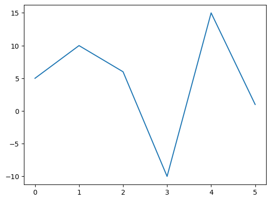
La linea anterior produce la gráfica mostrada en la figura, a la función plot únicamente se le pasó como argumento una lista de valores numéricos. Un resultado un poco más trabajado se obtiene con el siguiente código:
plt.plot([0,1,2,3,4,5], [5,10,6,-10,15,1], 'r--o', label="Partícula 1")
plt.xlabel("Tiempo (s)")
plt.ylabel("Posición (m)")
plt.title("Una primera aproximación")
plt.text(2,7,"$ P_1 (2,6) $", color="b")
plt.legend()
plt.grid(ls="--", color="#dadada")
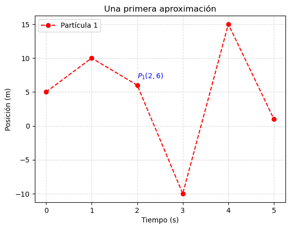
Se puede observar que aquí se adicionan elementos descriptivos: etiquetas, leyendas y anotaciones, que usualmente sirven para describir completamente una información que se proporciona a través de las gráficas.
9.4. Gráficas de líneas: la función plot#
La función plot está contenida en el módulo pyplot y básicamente con esta se produce cualquier gráfica
de líneas en coordenadas rectangulares. Esta función soporta varias maneras de ejecutarla dependiendo la cantidad de argumentos que se le pasen.
La forma más básica de la función plot es pasarle un sólo argumento, por ejemplo:
plt.plot([1,2,1,0,-1,1])
[<matplotlib.lines.Line2D at 0x1e9b27b4800>]
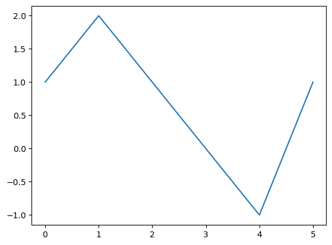
Al pasarle un sólo argumento, este se toma como los valores de la coordenada vertical, y se asume que la horizontal varía de 0 a N-1, donde N es el número de elementos contenidos en la lista de valores que se introducen.
La sintaxis más habitual es introducir dos argumentos, donde el primero contiene una lista X que define los valores
de la coordenada horizontal, y el segundo una lista Y correspondiente a los valores de la coordenada vertical,
por ejemplo:
plt.plot([10,25,30,60,70,100], [100,200,-100,300,0,-250])
[<matplotlib.lines.Line2D at 0x1e9b2976030>]
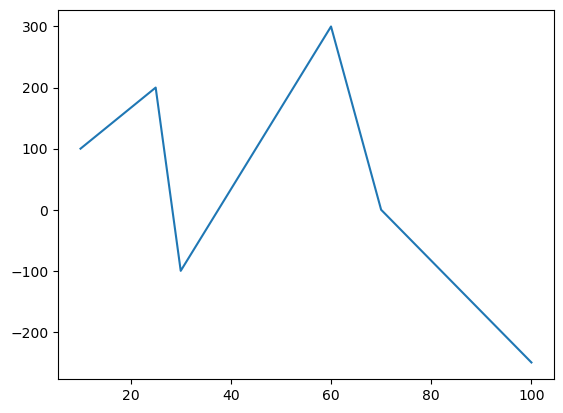
9.4.1. Graficando funciones matemáticas#
En matemáticas, una función es una relación que asigna elementos de un conjunto de manera unívoca a otro conjunto. Usualmente una función matemática se puede representar mediante una gráfica en coordenadas cartesianas, colocando uno de los conjuntos en el eje horizontal y el otro en el vertical.
Utilizando Python, y de manera específica la librería NumPy, se pueden evaluar las funciones matemáticas en un intervalo determinado y en una cantidad finita de puntos. Por ejemplo, suponga que se requieren calcular todos los pares ordenados correspondientes a la función \( y = \cos x \) en el intervalo \( 0 \leq x \leq 5 \), en Python se tendría que definir como:
x = np.linspace(0,5)
y = np.cos(x)
Las variable x es un arreglo de NumPy que contiene 50 valores linealmente equiespaciados entre
0 y 5, la variable y es también un arreglo de NumPy que resulta de aplicar la función coseno
a cada valor de x. Si se quiere graficar lo anterior, entonces, utilizando plot:
plt.plot(x, y)
[<matplotlib.lines.Line2D at 0x1e9b29d9820>]
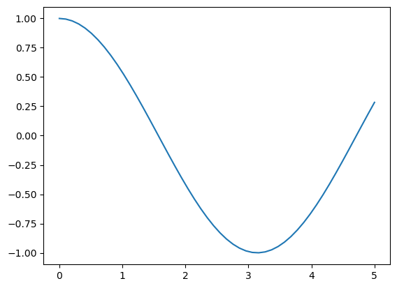
De manera similar a lo anterior se procederá a definir y graficar la función \(y = e^{-0.1x} \cos x \) en el intervalo \( 0 \leq x \leq 30 \):
x = np.linspace(0, 30)
y = np.exp(-0.1*x)*np.cos(x)
plt.plot(x,y)
[<matplotlib.lines.Line2D at 0x1e9b2b774d0>]
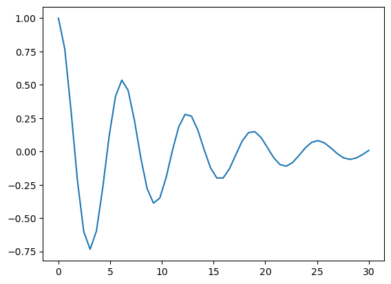
La cantidad de puntos a evaluar es una cuestión muy importante, ya que de esto depende la correcta visualización del comportamiento de una función. Naturalmente, entre más puntos evaluados mejor será la apreciación que se tenga de la curva en cuestión, pero implica un mayor gasto de memoría para guardar y evaluar todos los datos. Enseguida se muestra la misma función graficada en el mismo intervalo pero con 1000 y 5 puntos evaluados de manera respectiva, notará la diferencia entre los casos, es evidente que en el caso de los 5 puntos se pierde muchísima información.
# Con 1000 puntos evaluados
x = np.linspace(0, 30, 1000)
y = np.exp(-0.1*x)*np.cos(x)
plt.plot(x,y)
[<matplotlib.lines.Line2D at 0x1e9b2bf9610>]
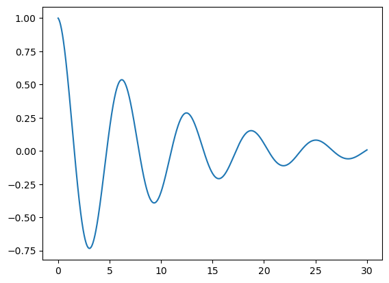
# Con 5 puntos evaluados
x = np.linspace(0, 30, 5)
y = np.exp(-0.1*x)*np.cos(x)
plt.plot(x,y)
[<matplotlib.lines.Line2D at 0x1e9b2c537d0>]
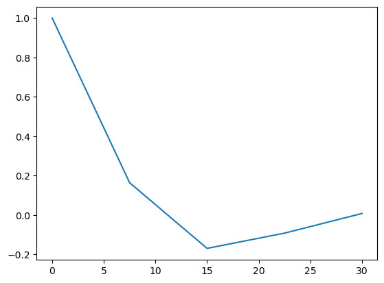
9.4.2. Modificando el color, estilos y grosor de línea#
La función plot acepta argumentos adicionales que sirven para modificar y controlar las características de
la línea que se grafica. Por ejemplo, se puede pasar un tercer argumento que contenga una combinación de color y estilo de línea:
x = np.linspace(0, 30)
y = np.exp(-0.1*x)*np.cos(x)
plt.plot(x, y, "r--")
[<matplotlib.lines.Line2D at 0x1e9b2ab0410>]
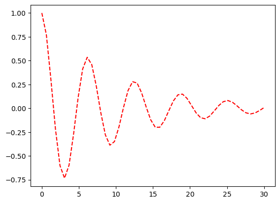
El código anterior genera una gráfica con una línea en color rojo (r) y un estilo de línea discontinua (--).
Si en lugar del string -- se coloca go, se obtiene una gráfica como la mostrada enseguida, podrá inferir que g refiere al color verde (green) y o justamente al uso de este caracter como símbolo para representar cada punto.
x = np.linspace(0, 30)
y = np.exp(-0.1*x)*np.cos(x)
plt.plot(x, y, "go")
[<matplotlib.lines.Line2D at 0x1e9b2b11cd0>]
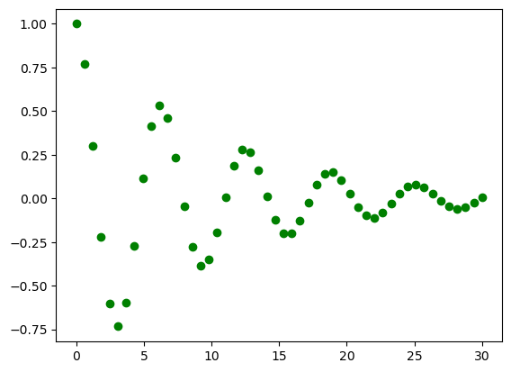
En https://matplotlib.org/api/markers_api.html se muestra una tabla con los símbolos (markers)
disponibles para utilizar en la función plot. En https://matplotlib.org/api/colors_api.html puede consultar información respecto a los colores que puede abreviar mediante un sólo caracter.
Además de la forma anterior, también es posible especificar el color y estilo de línea utilizando keyword arguments, por ejemplo:
x = np.linspace(0, 30)
y = np.exp(-0.1*x)*np.cos(x)
plt.plot(x, y, linestyle="--", color="r")
[<matplotlib.lines.Line2D at 0x1e9b3c73a70>]
En ambos casos se especifica un cierto estilo de línea y color, con la diferencia notoria de la sintaxis.
Utilizar keyword arguments es una manera más general, puesto que la definición con strings
no funciona para los casos en que se requieren colores que no se pueden especificar con
un sólo caracter, por ejemplo, Matplotlib dispone de un color llamado coral y
este no puede ser invocado mediante un sólo caracter, hace falta escribir todo el nombre.
x = np.linspace(0, 30, 80)
y = np.exp(-0.1*x)*np.sin(x)
plt.plot(x, y, linestyle="-", color="coral", marker="*")
[<matplotlib.lines.Line2D at 0x1e9b3d14ec0>]
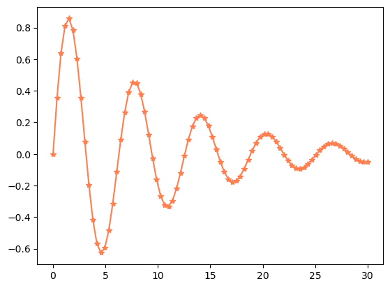
El grosor de línea se puede controlar mediante el keyword argument linewidth, por ejemplo;
plt.plot(x, y, linestyle="-", color="coral", marker="*", linewidth=3)
[<matplotlib.lines.Line2D at 0x1e9b3ec1d90>]
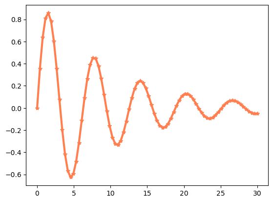
La función
plotsoporta algunos keyword arguments acortados. Por ejemplo, se puede utilizarlsen lugar delinestyle,lwen lugar delinewidth,msen lugar demarkersize,mfcen lugar demarkerfacecolor, entre otros.
9.4.3. Título de gráfica, etiquetas de ejes y nombres de curvas#
Por su naturaleza las gráficas nos sirven para presentar y/o visualizar información de ciertos datos, para lo cual se hace necesario especificar información descriptiva de lo que se muestra. Es muy común que se agreguen etiquetas a los ejes horizontal y vertical, así como el nombre de gráfica. Además, si se está graficando más de una curva, se hace necesario especificar a qué refiere cada una de ellas.
Por ejemplo, observe el siguiente código y la gráfica producida:
x = np.linspace(0, 30, 500)
y1 = np.exp(-0.1*x)*np.cos(x)
y2 = np.exp(-0.2*x)*np.sin(x)
plt.plot(x, y1, "b-", label="Partícula 1")
plt.plot(x, y2, "r-", label="Partícula 2")
plt.xlabel("Tiempo (s)")
plt.ylabel("Posición (mm)")
plt.title("Gráfica de posición")
plt.legend()
<matplotlib.legend.Legend at 0x1e9b3ec2000>
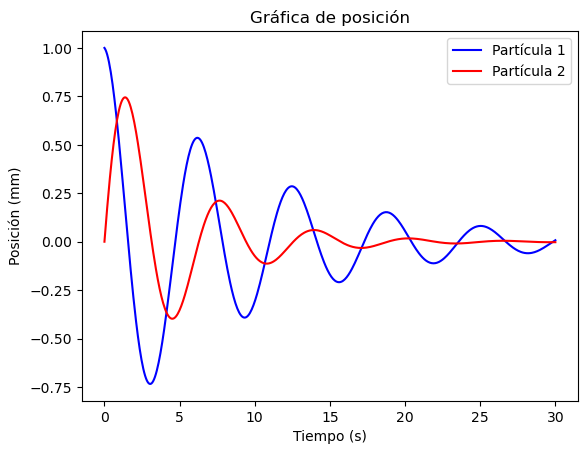
La instrucción xlabel coloca una etiqueta al eje horizontal, de manera similar ylabel lo hace para el eje
vertical. Con title adicionamos un título a la gráfica. La instrucción legend sirve para
colocar el recuadro con el nombre asignado a cada curva mediante el keyword argument label.
9.4.4. Anotaciones#
Con anotaciones nos referimos a cualquier texto que se coloque dentro del Axes de Matplotlib. Usualmente
utilizadas para indicar ciertas características partículares en una gráfica, o bien alguna nota informativa al respecto.
La función base para realizar este tipo de tareas es text. La sintaxis más simple de text es:
plt.text(px, py, texto)
Donde px y py denotan las coordenadas en donde se colocará la anotación indicada en texto.
Veamos un ejemplo:
x = np.linspace(0, 30, 100)
y = np.exp(-0.1*x)*np.cos(x)
plt.plot(x, y, "m")
plt.xlabel("Tiempo (s)")
plt.ylabel("Posición (mm)")
plt.title("Gráfica de posición")
plt.text(10, 0.5, "Algo informativo")
Text(10, 0.5, 'Algo informativo')
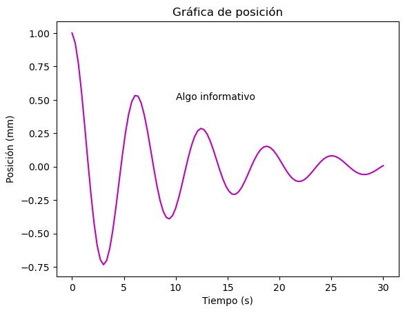
Note que únicamente colocamos el texto Algo informativo dentro del gráfico, de manera más específica en las coordenadas (10,0.5).
Al texto colocado podemos darle formato y ajustarlo a nuestros requerimientos, para ello a la función
text se le pueden incluir los keyword arguments descritos en https://matplotlib.org/users/text_props.html.
Por ejemplo:
x = np.linspace(0, 30, 200)
y = np.exp(-0.1*x)*np.cos(x)
plt.plot(x, y, "m")
plt.xlabel("Tiempo (s)")
plt.ylabel("Posición (mm)")
plt.title("Gráfica de posición")
plt.text(10, 0.5, "Algo informativo", fontsize=16, color="r",
name="Times New Roman")
Text(10, 0.5, 'Algo informativo')
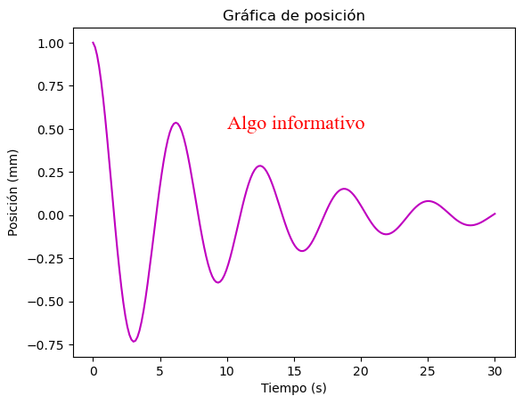
Observe que lo único que se cambió fueron algunas propiedades del texto, tales como el tamaño de la fuente con fontsize, el color de fuente con color y el tipo de fuente con name, con este último se debe tener cuidado, dado que el nombre de la fuente indicada debe estar instalada en la PC que se ejecuta.
9.5. Gráficas en coordenadas polares#
Las coordenadas polares o sistema de coordenadas polares son un sistema de coordenadas bidimensional en el que cada punto del plano se determina por una distancia y un ángulo * . Habitualmente las funciones en coordenadas polares tienen la forma \( r = f(\theta)\).
En Matplotlib se dispone de la función polar, la cual traza una gráfica en coordenadas polares, dados como argumentos
tanto la variable independiente \(\theta\) como la función \(r\). Enseguida vamos a ver cómo graficar la tan conocida
rosa polar, cuya ecuación general está dada por:
Implementando esto en Python, se tiene:
theta = np.linspace(0, 2*np.pi, 1000)
a,k,phi0 = 5,7,0
r = a*np.cos(k*theta + phi0)
plt.polar(theta, r, "r")
[<matplotlib.lines.Line2D at 0x1e9b42a1a90>]
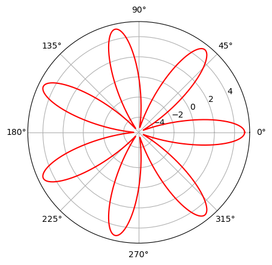
Observe que la función polar funciona de manera bastante similar a plot, de hecho se le pueden pasar los mismos keyword arguments para personalizar el gráfico resultante. Por ejemplo:
theta = np.linspace(0, 2*np.pi, 1000)
a,k,phi0 = 5,7,0
r = a*np.cos(k*theta + phi0)
plt.polar(theta, r, color="teal", linewidth=3)
[<matplotlib.lines.Line2D at 0x1e9b42ff980>]
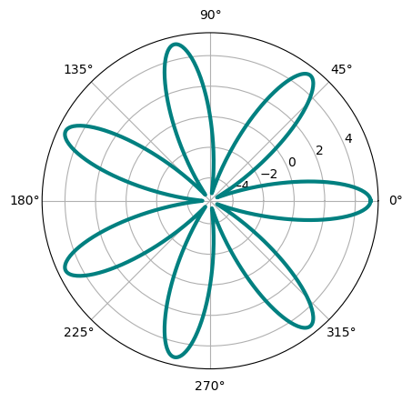
9.6. Gráficas de ecuaciones paramétricas#
Un sistema de ecuaciones paramétricas permite representar una curva o superficie en el plano o en el espacio, mediante valores que recorren un intervalo de números reales, mediante una variable, llamada parámetro, considerando cada coordenada de un punto como una función dependiente del parámetro.[1]
Por ejemplo, las ecuaciones paramétricas de una circunferencia de radio \(r\) y centrada en el origen, están dadas por:
Para graficar un conjunto de ecuaciones paramétricas en el plano podemos utilizar la función plot, definiendo primeramente el intervalo en el cual se evaluará el parámetro y posteriormente creando las expresiones correspondientes a cada ecuación paramétrica. Veamos el ejemplo de la circunferencia:
t = np.linspace(0,2*np.pi)
r = 3
x = r*np.cos(t)
y = r*np.sin(t)
plt.plot(x,y)
plt.axis("square");
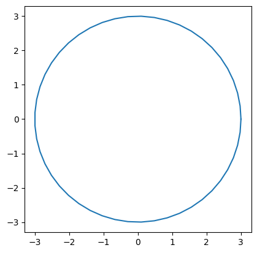
Naturalmente, podemos personalizar esta gráfica con las etiquetas, colores y estilos que se requieran.
9.7. Gráficas de dispersión#
Las gráficas de dispersión son utilizadas para visualizar la relación entre dos variables numéricas. En este tipo de gráficas, cada punto representa una observación y su posición en el plano cartesiano está determinada por los valores de las dos variables analizadas. Son muy utilizadas en ingeniería y en análisis de datos para identificar patrones, tendencias o correlaciones entre los datos.
En Matplotlib la función scatter nos permite crear una gráfica de dispersión, su sintaxis más simple es:
plt.scatter(x, y)
Donde x y y son arreglos numéricos del mismo tamaño que contienen los valores a graficar.
Observa el siguiente ejemplo, en donde graficamos las horas de estudio vs la calificación obtenida de un conjunto de 15 estudiantes.
horas_de_estudio = [15,18,13,22,12,8,10,19,17,18,25,15,11,20,17]
calificacion_examen = [8.4,9.0,8.5,9.0,8.0,7.7,8.3,8.9,8.8,9.2,8.9,8.4,8.4,9.1,8.5]
plt.scatter(horas_de_estudio, calificacion_examen)
plt.xlabel("Horas de estudio")
plt.ylabel("Calificación")
Text(0, 0.5, 'Calificación')
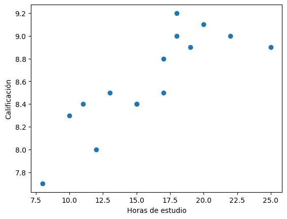
Notarás que la variable pasada como primer argumento se coloca en el eje horizontal y la del segundo argumento en el eje vertical. Observa que con esta gráfica podemos notar que, al parecer, hay una correlación entre las horas de estudio y la calificación obtenida, todo parece indicar que la tendencia es que entre más horas estudia un alumno su calificación es mayor.
A la función scatter se le puede indicar el color que tendrán los puntos de la gráfica de dispersión, para esto hacemos uso del keyword argument c, por ejemplo para que los puntos de la gráfica anterior sean de color rojo podríamos hacer lo siguiente:
horas_de_estudio = [15,18,13,22,12,8,10,19,17,18,25,15,11,20,17]
calificacion_examen = [8.4,9.0,8.5,9.0,8.0,7.7,8.3,8.9,8.8,9.2,8.9,8.4,8.4,9.1,8.5]
plt.scatter(horas_de_estudio, calificacion_examen, c="red")
plt.xlabel("Horas de estudio")
plt.ylabel("Calificación")
Text(0, 0.5, 'Calificación')
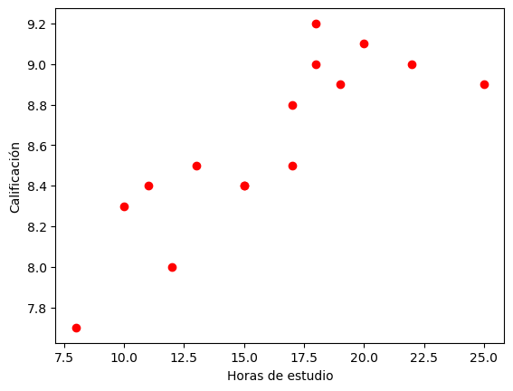
En algunas situaciones el argumento c nos puede ser utilizar para visualizar una tercera variable, mediante una escala de colores específicos. Por ejemplo, a la gráfica de calificacion vs horas_estudio vamos a incluirle una tercera variable tiempo_examen, mediante un mapa de colores.
horas_de_estudio = [15,18,13,22,12,8,10,19,17,18,25,15,11,20,17]
calificacion_examen = [8.4,9.0,8.5,9.0,8.0,7.7,8.3,8.9,8.8,9.2,8.9,8.4,8.4,9.1,8.5]
tiempo_examen = [60,55,60,45,60,55,60,57,48,52,42,55,60,53,49]
plt.scatter(horas_de_estudio, calificacion_examen, c=tiempo_examen, cmap="jet")
plt.xlabel("Horas de estudio")
plt.ylabel("Calificación")
Text(0, 0.5, 'Calificación')
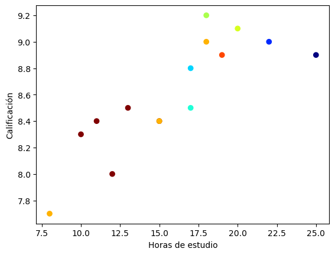
Observa que ahora los puntos están coloreados de acuerdo al tiempo que le llevó a un alumno completar el examen. Un color azul oscuro indica un menor tiempo y un color rojo oscuro indica un mayor tiempo. Para tener una mejor referencia de la escala de variación de colores podemos agregar una barra de colores con plt.colorbar:
horas_de_estudio = [15,18,13,22,12,8,10,19,17,18,25,15,11,20,17]
calificacion_examen = [8.4,9.0,8.5,9.0,8.0,7.7,8.3,8.9,8.8,9.2,8.9,8.4,8.4,9.1,8.5]
tiempo_examen = [60,55,60,45,60,55,60,57,48,52,42,55,60,53,49]
plt.scatter(horas_de_estudio, calificacion_examen, c=tiempo_examen, cmap="jet")
plt.colorbar()
plt.xlabel("Horas de estudio")
plt.ylabel("Calificación")
Text(0, 0.5, 'Calificación')
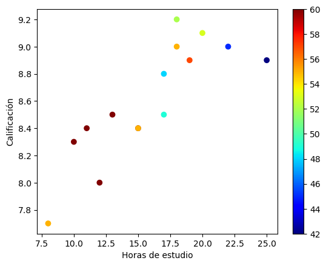
Es posible también segmentar o clasificar con los colores de los puntos, por ejemplo, vamos a suponer que queremos mostrar en rojo aquellos puntos que correspondan a alumnos (observaciones) cuyo tiempo para realizar el examen fue mayor a 50 minutos, y en color azul aquellos que les tomó 50 o menos. Para esto podemos crear una nueva lista basada en esta condición:
horas_de_estudio = [15,18,13,22,12,8,10,19,17,18,25,15,11,20,17]
calificacion_examen = [8.4,9.0,8.5,9.0,8.0,7.7,8.3,8.9,8.8,9.2,8.9,8.4,8.4,9.1,8.5]
tiempo_examen = [60,55,60,45,60,55,60,57,48,52,42,55,60,53,49]
color_tiempo_examen = ["r" if k>50 else "b" for k in tiempo_examen]
plt.scatter(horas_de_estudio, calificacion_examen, c=color_tiempo_examen)
plt.xlabel("Horas de estudio")
plt.ylabel("Calificación")
Text(0, 0.5, 'Calificación')
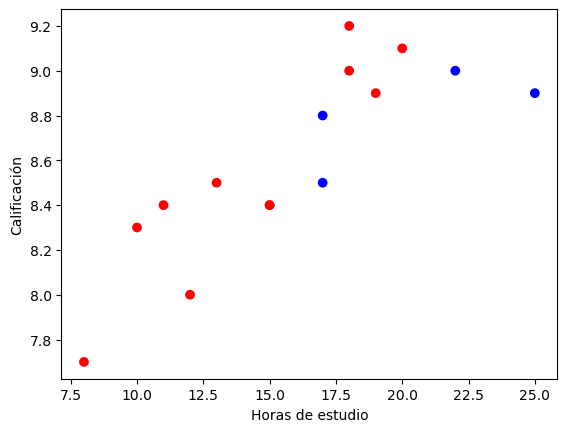
El argumento s también puede servirnos para mostrar una tercera variable, este argumento controla el tamaño de los puntos representados. Por ejemplo, si utilizamos tiempo_examen como argumento para el tamaño entonces cada punto de la gráfica será proporcional al tiempo que le llevó a cada alumno completar el examen.
horas_de_estudio = [15,18,13,22,12,8,10,19,17,18,25,15,11,20,17]
calificacion_examen = [8.4,9.0,8.5,9.0,8.0,7.7,8.3,8.9,8.8,9.2,8.9,8.4,8.4,9.1,8.5]
tiempo_examen = [60,55,60,45,60,55,60,57,48,52,42,55,60,53,49]
plt.scatter(horas_de_estudio, calificacion_examen, s=tiempo_examen)
plt.xlabel("Horas de estudio")
plt.ylabel("Calificación")
Text(0, 0.5, 'Calificación')
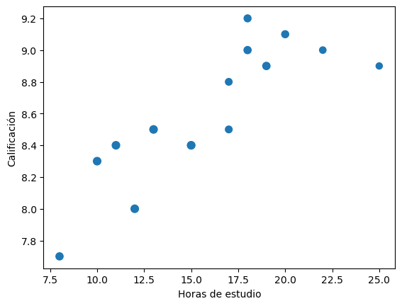
Dado que las cantidades de tiempo_examen son muy cercanas en magnitud, la diferencia en el tamaño resultante en la visualización será poco notoria. Esto puede arreglarse modificando un poco el arreglo tiempo_examen para que las diferencias sean más notorias:
horas_de_estudio = [15,18,13,22,12,8,10,19,17,18,25,15,11,20,17]
calificacion_examen = [8.4,9.0,8.5,9.0,8.0,7.7,8.3,8.9,8.8,9.2,8.9,8.4,8.4,9.1,8.5]
tiempo_examen = np.array([60,55,60,45,60,55,60,57,48,52,42,55,60,53,49])
plt.scatter(horas_de_estudio, calificacion_examen, s=4*(tiempo_examen - 40))
plt.xlabel("Horas de estudio")
plt.ylabel("Calificación")
Text(0, 0.5, 'Calificación')
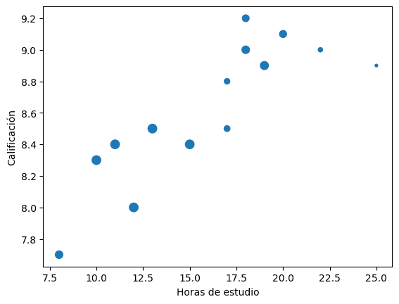
Obviamente se puede combinar la especificación del color con la del tamaño, para resaltar un poco más la tercera variable.
horas_de_estudio = [15,18,13,22,12,8,10,19,17,18,25,15,11,20,17]
calificacion_examen = [8.2,9.0,8.5,9.0,8.0,7.7,8.3,8.9,8.8,9.2,8.9,8.4,8.4,9.1,8.5]
tiempo_examen = np.array([60,55,60,45,60,55,60,57,48,52,42,55,60,53,49])
plt.scatter(horas_de_estudio, calificacion_examen, c=tiempo_examen, s=4*(tiempo_examen - 40))
plt.xlabel("Horas de estudio")
plt.ylabel("Calificación")
Text(0, 0.5, 'Calificación')
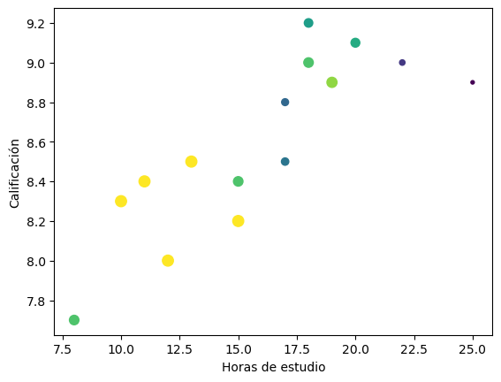
Otro argumento de scatter que puede resultar útil es alpha, el cual nos permite establecer un nivel de transparencia. Esto es útil cuando tenemos muchos datos que podrían estarse solapando, un nivel de transparencia adecuado permite visualizar de mejor manera el conjunto de datos, veamos un ejemplo:
n = 200
x = np.random.randint(1,100,n)
y = np.random.randint(1,100,n)
s = np.random.randint(1,300,n)
plt.scatter(x, y, s=s, c="r", alpha=0.5)
plt.xlabel("X")
plt.ylabel("Y")
Text(0, 0.5, 'Y')
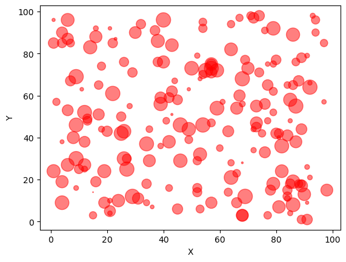
Una situación en la que también podría ser útil establecer un nivel de transparencia, es cuando tenemos dos o más grupos de datos que estamos representando y queremos hacer énfasis en alguno de ellos, observa el siguiente ejemplo:
horas_de_estudio_A = np.array([15,18,13,22,12,8,10,19,17,18,25,15,11,20,17])
calificacion_examen_A = np.array([8.2,9.0,8.5,9.0,8.0,7.7,8.3,8.9,8.8,9.2,8.9,8.4,8.4,9.1,8.5])
n = len(horas_de_estudio_A)
offset_horas = np.random.randint(-2,8,n)
offset_calificacion = np.random.rand(n) - np.random.rand(n)
horas_de_estudio_B = horas_de_estudio_A + offset_horas
calificacion_examen_B = calificacion_examen_A + offset_calificacion
plt.scatter(horas_de_estudio_A, calificacion_examen_A, alpha=0.2, label="Grupo A")
plt.scatter(horas_de_estudio_B, calificacion_examen_B, label="Grupo B")
plt.xlabel("Horas de estudio")
plt.ylabel("Calificación")
plt.legend()
<matplotlib.legend.Legend at 0x21273775df0>
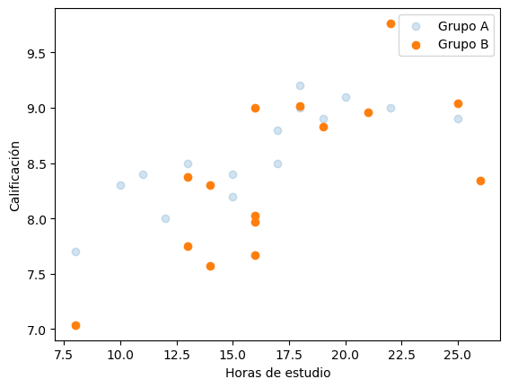
9.8. Gráficas de barras#
Las gráficas de barras son una de las formas más comunes de visualizar datos categóricos. Son ideales para comparar magnitudes entre diferentes categorías, ya que la altura (o longitud) de cada barra es proporcional al valor que representa. Matplotlib ofrece funciones específicas para crear gráficos de barras verticales y horizontales.
Con la función bar podemos crear gráficas de barras verticales, la sintaxis más básica es:
plt.bar(categorías, valores)
Donde categorías es una lista de las categorías a representar en el eje horizontal y valores una lista con los valores asociados a cada categoría.
Veamos el siguiente ejemplo, en donde las categorías corresponden a algunos nombres de alumnos y los valores son sus calificaciones obtenidas.
alumnos = ["Juan","Ana","José","Pablo","Laura"]
calificaciones = [7.5, 8.5, 6.3, 9.2, 8.8]
plt.bar(alumnos, calificaciones)
<BarContainer object of 5 artists>
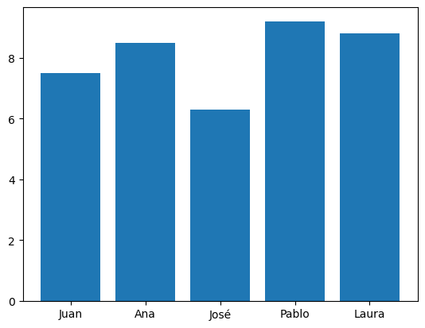
La gráfica anterior se puede personalizar un poco. A la función bar le podemos pasar algunos keyword arguments, por ejemplo, con width podemos controlar el ancho de cada una de las barras y con color podemos especificar su color, tal y como puedes constatarlo a continuación:
alumnos = ["Juan","Ana","José","Pablo","Laura"]
calificaciones = [7.5, 8.5, 6.3, 9.2, 8.8]
plt.bar(alumnos, calificaciones, width=0.35, color="red")
plt.ylabel("Calificación")
plt.title("Calificaciones 2A")
Text(0.5, 1.0, 'Calificaciones 2A')
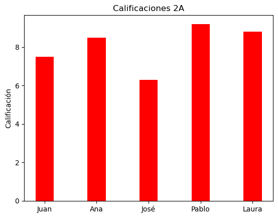
Recuerda que con title colocamos un título a nuestro Axes, y con ylabel establecemos una etiqueta para el eje vertical. Es posible también utilizar colores específicos para cada barra de la gráfica, para esto podemos pasarle al argumento color una lista con las especificaciones de los colores, por ejemplo:
alumnos = ["Juan","Ana","José","Pablo","Laura"]
calificaciones = [7.5, 8.5, 6.3, 9.2, 8.8]
colores = ["red","coral","green","teal","purple"]
plt.bar(alumnos, calificaciones, width=0.35, color=colores)
plt.ylabel("Calificación")
plt.title("Calificaciones 2A")
Text(0.5, 1.0, 'Calificaciones 2A')
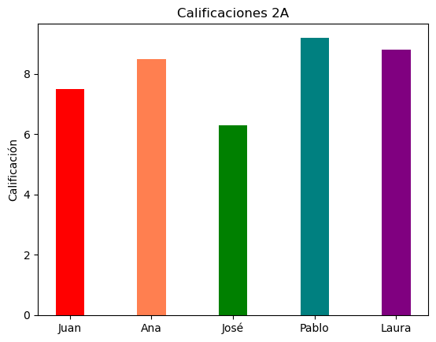
En ocasiones puede ocurrir que tenemos muchas categorías, o bien, que las etiquetas son extensas y en consecuencia se sobreponen o quedan muy apretadas, como en el siguiente ejemplo:
alumnos = ["Juan Pérez","Ana González","José Hernández","Pablo Larios","Laura López"]
calificaciones = [7.5, 8.5, 6.3, 9.2, 8.8]
plt.bar(alumnos, calificaciones, width=0.5, color="k")
plt.ylabel("Calificación")
plt.title("Calificaciones 2A")
Text(0.5, 1.0, 'Calificaciones 2A')
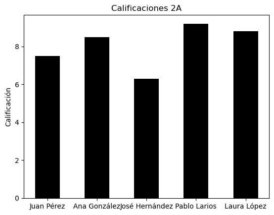
Una posible manera de resolver esto, sin trastocar las dimensiones de la figura o la información a mostrar, es rotando un poco las etiquetas de las categorías, lo cual podemos hacer con la función xticks y el argumento rotation, tal como se muestra enseguida:
alumnos = ["Juan Pérez","Ana González","José Hernández","Pablo Larios","Laura López"]
calificaciones = [7.5, 8.5, 6.3, 9.2, 8.8]
plt.bar(alumnos, calificaciones, width=0.5, color="k")
plt.ylabel("Calificación")
plt.title("Calificaciones 2A")
plt.xticks(rotation=30);
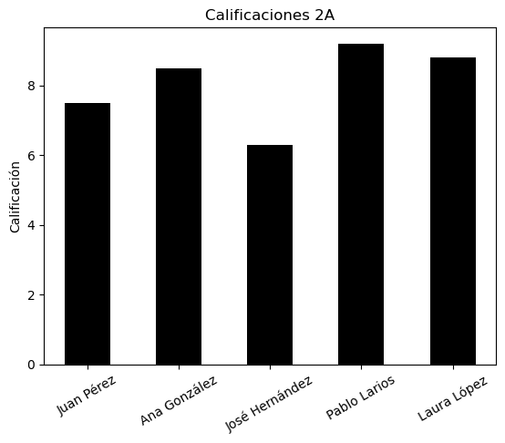
9.8.1. Gráficas de barras horizontales#
En Matplotlib disponemos también de la función barh, que nos permite trazar gráficas de barras orientadas de forma horizontal. La sintaxis es muy similar a la de bar, sólo hay que tener cuidado con el hecho de que ahora el argumento width no define que tan gruesa es la barra, sino que define el valor asociado con dicha categoría; en su lugar el argumento height nos servirá para definir el grosor de la barra. Además de lo anterior, considera que ahora el eje horizontal será el que contiene los valores asociados a cada categoría. Veamos un ejemplo:
alumnos = ["Juan Pérez","Ana González","José Hernández","Pablo Larios","Laura López"]
calificaciones = [7.5, 8.5, 6.3, 9.2, 8.8]
plt.barh(alumnos, calificaciones, height=0.4, color="teal")
plt.xlabel("Calificación")
plt.title("Calificaciones 2A")
Text(0.5, 1.0, 'Calificaciones 2A')
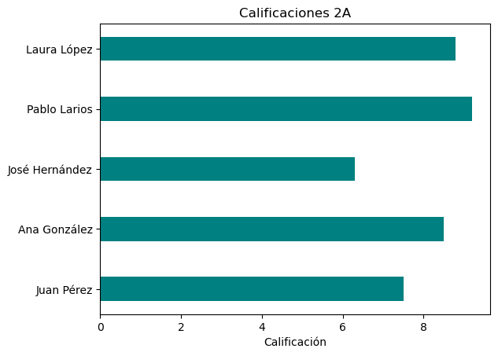
9.8.2. Gráficas de barras agrupadas#
Las gráficas de barras agrupadas son una herramienta útil para comparar múltiples conjuntos de datos o variables dentro de las mismas categorías. Cada grupo de barras representa una categoría, y dentro de cada grupo, las barras individuales representan diferentes subconjuntos o series de datos.
Para ejemplificar, vamos a suponer que tenemos información acerca de las calificaciones obtenidas por nuestros alumnos en dos parciales de un curso, tal y como se muestra en la siguiente tabla:
Alumno |
Parcial 1 |
Parcial 2 |
|---|---|---|
Juan |
8.5 |
7.5 |
Ana |
8.7 |
8.5 |
José |
7.1 |
6.3 |
Pablo |
8.7 |
9.2 |
Laura |
8.9 |
8.8 |
Con una gráfica de barras agrupadas vamos a mostrar cómo varió la calificación de un parcial a otro para cada uno de los alumnos.
# adaptado de: https://matplotlib.org/3.1.1/gallery/lines_bars_and_markers/barchart.html
alumnos = ["Juan","Ana","José","Pablo","Laura"]
calificaciones_parcial_1 = [8.5, 8.7, 7.1, 8.7, 8.9]
calificaciones_parcial_2 = [7.5, 8.5, 6.0, 9.2, 7.7]
x = np.arange(len(alumnos)) # ubicaciones de las etiquetas
ancho = 0.25 #ancho de las barras
plt.bar(x-ancho/2, calificaciones_parcial_1, width=ancho, color="violet", label="Parcial 1")
plt.bar(x+ancho/2, calificaciones_parcial_2, width=ancho, color="tomato", label="Parcial 2")
plt.ylabel("Calificación")
plt.title("Calificaciones 2A")
plt.xticks(x, labels=alumnos)
plt.legend()
<matplotlib.legend.Legend at 0x1e9aca53050>
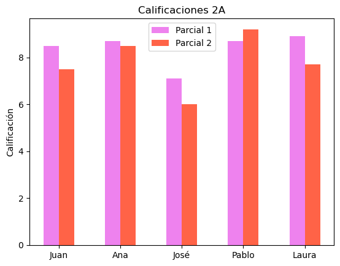
9.8.3. Gráficas de barras apiladas#
Las gráficas de barras apiladas son una variante de los gráficos de barras que permiten representar la contribución de diferentes componentes dentro de una misma categoría. En este tipo de gráfico, cada barra se divide en segmentos que representan subconjuntos de datos, y la altura total de la barra corresponde a la suma de todos los componentes. Son especialmente útiles para mostrar cómo se distribuye un total entre varias partes.
Para ejemplificar, y continuando con el ejemplo de alumnos que hemos estado trabajando, vamos a suponer que la calificación total está conformada por la calificación de un examen y la calificación de las tareas, cada uno de estos rubros con un valor de 5 puntos de 10. En la siguiente tabla se muestra la manera en que está conformada la calificación de nuestros cinco alumnos:
Alumno |
Examen |
Tareas |
Final |
|---|---|---|---|
Juan |
5.0 |
3.5 |
8.5 |
Ana |
4.2 |
4.5 |
8.7 |
José |
3.0 |
4.1 |
7.1 |
Pablo |
3.8 |
4.9 |
8.7 |
Laura |
4.1 |
4.8 |
8.9 |
Utilizando barras apiladas vamos a mostrar graficamente la composición de la calificación de cada uno de ellos:
alumnos = ["Juan","Ana","José","Pablo","Laura"]
calificacion_examen = [5, 4.2, 3, 3.8, 4.1]
calificacion_tareas = [3.5, 4.5, 4.1, 4.9, 4.8]
plt.bar(alumnos, calificacion_examen,
label='Examen',
color='skyblue',
width=ancho)
plt.bar(alumnos, calificacion_tareas,
label='Tareas',
color='coral',
width=ancho,
bottom=calificacion_examen)
plt.legend()
plt.ylabel("Calificación")
plt.title("Calificaciones 2A")
Text(0.5, 1.0, 'Calificaciones 2A')
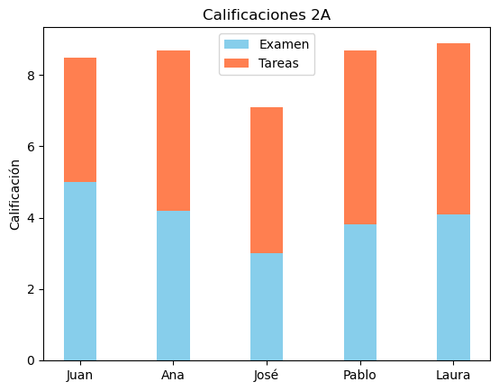
Observa que invocamos dos veces la función bar, una para cada tipo de calificación. En la primera invocación, para graficar calificacion_examen, observa que es similar a las que hemos estado trabajando previamente, sin embargo, para graficar calificacion_tareas puedes notar que agregamos el keyword argument bottom, el cual nos permite indicar la coordenada vertical base a partir de la cual comenzarán a trazarse las barras correspondientes, obviamente en este caso queremos apilar las barras de las tareas a las ya existentes de los exámenes y por esta razón usamos calificacion_examen como valor para el argumento bottom.
A continuación, se muestra otro ejemplo de gráficas de barras apiladas para representar la composición de los gastos mensuales de una persona durante los primeros cuatro meses de un año determinado. En la siguiente tabla se pueden observar las cantidades gastadas por mes en cada categoría de gasto.
Mes |
Alimentación |
Educación |
Servicios |
Salud |
|---|---|---|---|---|
Enero |
15,500 |
5,500 |
4,500 |
2,000 |
Febrero |
12,800 |
15,500 |
2,500 |
1,500 |
Marzo |
13,900 |
6,500 |
1,800 |
2,500 |
Abril |
11,200 |
7,000 |
2,000 |
1,800 |
plt.figure(figsize=(8,4))
meses = ["Enero","Febrero","Marzo","Abril"] # categorías (meses del primer cuatrimestre)
gastos_alimentacion = np.array([15_500, 12_800, 13_900, 11_200])
gastos_educacion = np.array([5_500, 15_500, 6_500, 7_000])
gastos_servicios = np.array([4_500, 2_500, 1_800, 2_000])
gastos_salud = np.array([2_000, 1_500, 2_500, 1_800])
ancho = 0.35 # ancho de las barras
plt.bar(meses, gastos_alimentacion,
label='Alimentación',
color='orange',
width=ancho)
plt.bar(meses, gastos_educacion,
bottom=gastos_alimentacion,
label='Educación',
color='skyblue',
width=ancho)
plt.bar(meses, gastos_servicios,
bottom=gastos_alimentacion+gastos_educacion,
label='Servicios',
color='teal',
width=ancho)
plt.bar(meses, gastos_salud,
bottom=gastos_alimentacion+gastos_educacion+gastos_servicios,
label='Salud',
color='pink',
width=ancho)
plt.title("Gastos del primer cuatrimestre")
plt.ylabel("Gasto ($)")
plt.legend()
<matplotlib.legend.Legend at 0x1e9b055e300>
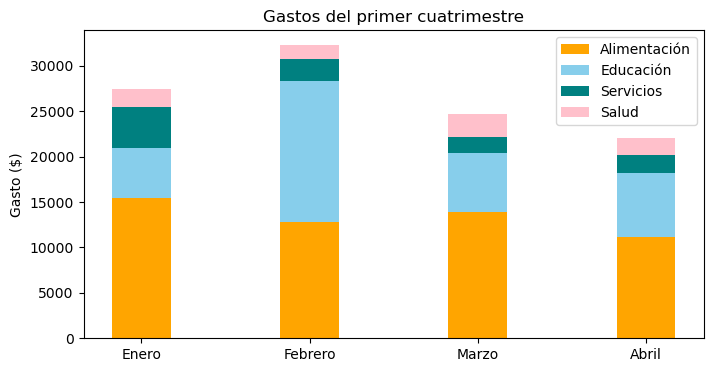
Habrás notado que ahora cuando trazamos las barras para los gastos de servicio y de salud, en la especificación de bottom estamos utilizando la suma de los gastos previos que vamos graficando. Es importante pues que cada uno de los arreglos de los gastos estén definidos como arrays de NumPy en lugar de listas, de lo contrario si intentamos sumar dos listas (con el operador +) lo que obtendremos será una concatenación y Python nos lanzará un error.
9.9. Histogramas#
Un histograma es una representación gráfica de una variable en forma de barras, donde la superficie de cada barra es proporcional a la frecuencia de los valores representados [2]. Un histograma divide el rango de los datos en intervalos y cuenta cuántos valores caen en cada intervalo. Luego, representa estos conteos como barras, donde la altura de cada barra corresponde al número de observaciones en ese intervalo.
En Matplotlib podemos utilizar la función hist para crear histogramas, veamos un ejemplo:
calificaciones = [6.5,7.0,8.5,7.5,8.0,7.4,8.3,7.6,8.8,8.2,8.0,7.8,8.4,9.5,8.5,7.3,7.9,9.0,7.2,8.7]
plt.hist(calificaciones)
plt.xlabel("Calificación")
plt.ylabel("Frecuencia")
Text(0, 0.5, 'Frecuencia')
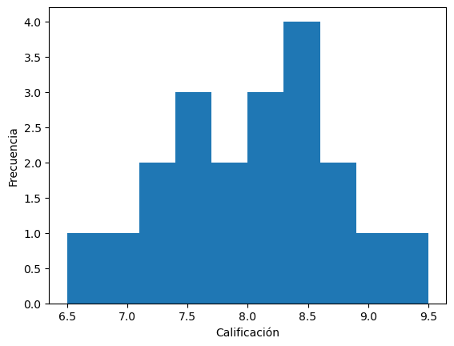
Es posible especificar el número de intervalos en los que se dividen los datos, para esto utilizamos el argumento bins:
calificaciones = [6.5,7.0,8.5,7.5,8.0,7.4,8.3,7.6,8.8,8.2,8.0,7.8,8.4,9.5,8.5,7.3,7.9,9.0,7.2,8.7]
plt.hist(calificaciones, bins=5)
plt.xlabel("Calificación")
plt.ylabel("Frecuencia")
Text(0, 0.5, 'Frecuencia')
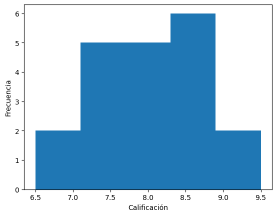
Podemos también personalizar la apariencia del histograma mediante los argumentos color y edgecolor, para modificar, respectivamente, los colores de las barras y sus bordes.
mu = 0 # media
sigma = 0.5 # desviación estándar
datos = np.random.normal(0, 1, 2000) # valores aleatorios que siguen una distribución normal
plt.hist(datos, bins=30, color='pink', edgecolor='red')
plt.xlabel('Valores')
plt.ylabel('Frecuencia')
plt.title('Histograma de una distribución normal')
Text(0.5, 1.0, 'Histograma de una distribución normal')
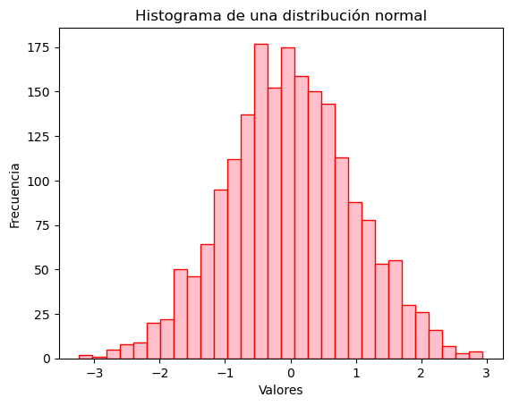
9.10. Gráficas de pastel#
Las gráficas de pastel (o de tarta, o gráficos circulares) nos sirven para representar porcentajes y proporciones. Matplotlib dispone de la función pie, cuya sintaxis depende del grado de personalización y control que se requiera sobre la gráfica de pastel a dibujar.
Para ejemplificar el uso de esta función vamos a suponer que se tienen los siguientes datos sobre algunas personas que tienen cierta cantidad de manzanas en su poder:
Nombre |
Manzanas |
|---|---|
Ana |
20 |
Juan |
10 |
Diana |
25 |
Catalina |
30 |
Para representar el porcentaje del total del cual dispone cada uno, podemos trazar una gráfica de pastel. Para ello realizamos lo siguiente:
manzanas = [20,10,25,30]
nombres = ["Ana","Juan","Diana","Catalina"]
plt.pie(manzanas, labels=nombres);
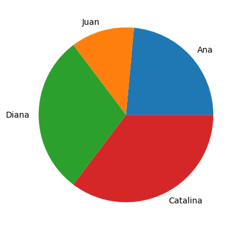
Observa que utilizando listas definimos los nombres y el número de manzanas correspondientes. Luego, la función pie acepta un primer argumento que contiene los valores absolutos de cada ítem, además, de un keyword argument labels que contiene las etiquetas correspondientes.
El porcentaje correspondiente a cada ítem se puede indicar mediante el argumento autopct:
manzanas = [20,10,25,30]
nombres = ["Ana","Juan","Diana","Catalina"]
plt.pie(manzanas, labels=nombres, autopct="%0.1f %%");
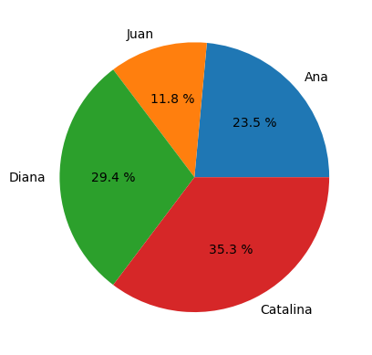
Los combinación de colores se puede especificar de manera manual, pasando una lista de color en formato hexadecimal o RGB.
manzanas = [20,10,25,30]
nombres = ["Ana","Juan","Diana","Catalina"]
colores = ["#EE6055","#60D394","#AAF683","#FFD97D","#FF9B85"]
plt.pie(manzanas, labels=nombres, autopct="%0.1f %%", colors=colores);
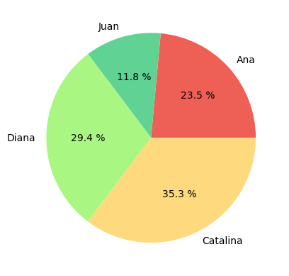
Los colores también se pueden determinar y autocalcular utilizando un mapa de color específico. Enseguida se muestra un ejemplo donde la variación es sobre colores en tonos azules.
from matplotlib import colors
manzanas = [20,10,25,30]
nombres = ["Ana","Juan","Diana","Catalina"]
normdata = colors.Normalize(min(manzanas), max(manzanas))
colormap = plt.get_cmap("Blues")
colores =colormap(normdata(manzanas))
plt.pie(manzanas, labels=nombres, autopct="%0.1f %%", colors=colores)
plt.axis("equal");
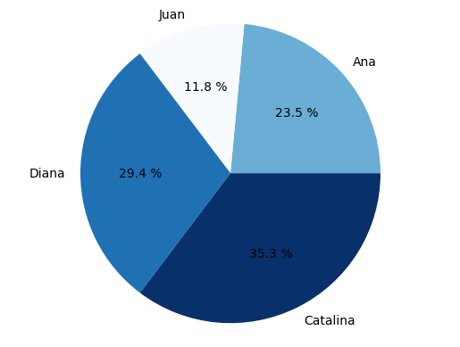
Es posible también segmentar o separar del bloque una o más de las rebanadas de la gráfica de pastel. Para ello se debe pasar una lista o tupla con valores entre 0 y n que indican el desfase respecto al centro, 0 indica ningún desfase y n un desfase equivalente a n*r, donde r es el radio de la gráfica de pastel.
manzanas = [20,10,25,30]
nombres = ["Ana","Juan","Diana","Catalina"]
colores = ["#EE6055","#60D394","#AAF683","#FFD97D","#FF9B85"]
desfase = (0, 0, 0, 0.1)
plt.pie(manzanas, labels=nombres, autopct="%0.1f %%", colors=colores, explode=desfase)
plt.axis("equal");
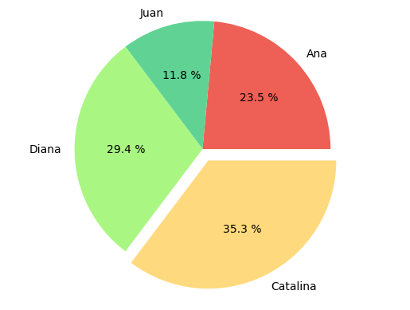
9.11. La función subplot: múltiples axes#
La función subplot sirve para insertar axes en un figure organizados de una manera predefinida, usualmente una cuadrícula de m filas y n columnas. En cada uno de esos axes se pueden colocar información por separado.
En el siguiente ejemplo se muestra el uso de la función subplot para crear dos axes apilados de forma vertical:
x = np.linspace(0,10)
y1 = x
y2 = np.sin(x)
plt.subplot(211)
plt.plot(x, y1, "r")
plt.subplot(212)
plt.plot(x, y2, "m")
[<matplotlib.lines.Line2D at 0x1e9b1c1b5c0>]
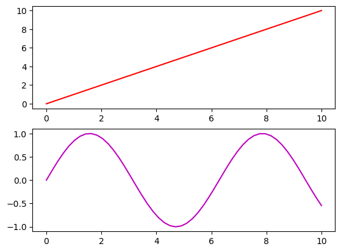
La sintaxis básica de subplot es:
plt.subplot(mnk)
Donde m corresponde al número de filas y n al número de columnas del arreglo de axes que se mostrarán. Observe que en el ejemplo anterior m=2 y n=1. El valor de k hace referencia a la posición (en el arreglo) del axes correspondiente. En ese entendido, la línea plt.subplot(211) refiere al axes en la primera posición del arreglo de dos filas y una columna, cualquier instrucción de graficado que se coloque posteriormente a esa línea, se entenderá que deberán mostrarse en ese axes, tal y como lo puede constatar en el ejemplo anterior.
Se pueden colocar etiquetas por separado a cada uno de los axes insertado mediante subplot, por ejemplo:
t = np.linspace(0,10)
s1 = t**2 + 1
s2 = 2*t
plt.subplot(211)
plt.plot(t, s1, "r")
plt.xlabel("Tiempo")
plt.ylabel("Posición")
plt.subplot(212)
plt.plot(t, s2, "m")
plt.xlabel("Tiempo")
plt.ylabel("Velocidad")
Text(0, 0.5, 'Velocidad')
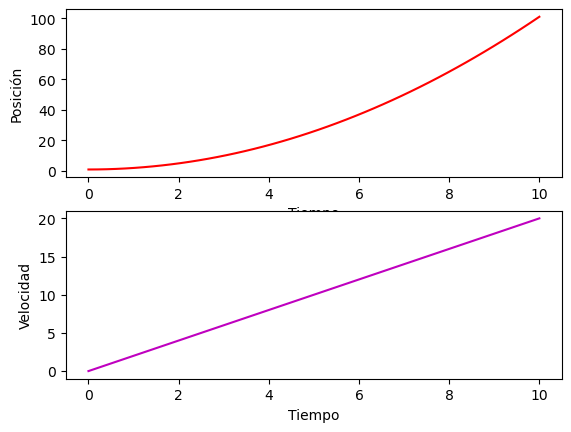
Se puede observar que, la etiqueta horizontal para el primer axes no es visible, esto se puede arreglar utilizando la función tight_layout, la cual ajusta automáticamente los espacios alrededor y entre los subplots:
t = np.linspace(0,10)
s1 = t**2 + 1
s2 = 2*t
plt.subplot(211)
plt.plot(t, s1, "r")
plt.xlabel("Tiempo")
plt.ylabel("Posición")
plt.subplot(212)
plt.plot(t, s2, "m")
plt.xlabel("Tiempo")
plt.ylabel("Velocidad")
plt.tight_layout()
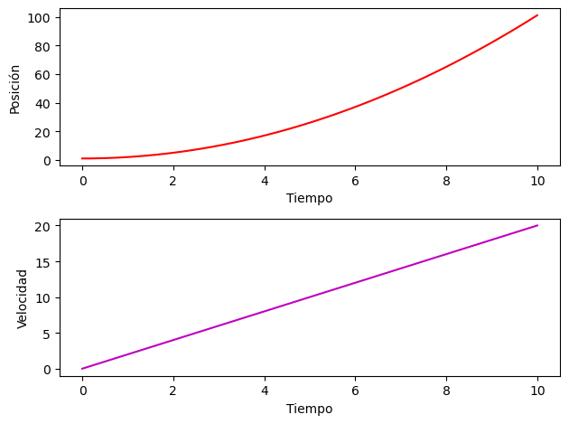
Enseguida se muestra un conjunto de 16 axes creados con la función subplot, con la intención de que puedas indentificar el orden en el cual Matplotlib los coloca en la cuadrícula; se puede inferir rapidamente que los numera en orden creciente hacia la derecha y hacia abajo.
for k in range(1,17):
plt.subplot(4,4,k)
plt.text(0.5, 0.5, str(k), color="blue", fontsize=20)
plt.tight_layout()
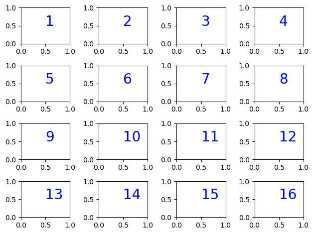
Del código anterior se identifica que la función subplot también puede recibir los argumentos por separado, es decir, en la forma:
plt.subplot(m,n,k)
9.11.1. Subplots multifila/multicolumna con Gridspec#
GridSpec es una clase de Matplotlib que permite crear y organizar subplots en una cuadrícula flexible. En conjunto con plt.subplot nos posibilita definir múltiples Axes que pueden extenderse a lo largo de varias filas o columnas.
Para poder utilizar GridSpec primero debemos importarla de la siguiente manera:
from matplotlib.gridspec import GridSpec
Enseguida mostramos un ejemplo en el cual hacemos uso de GridSpec para colocar tres axes distribuidos en dos filas y tres columnas:
x = np.linspace(0,10)
y1 = np.cos(x)
y2 = np.sin(x)
y3 = np.sin(x) + np.cos(x)
fig = plt.figure(figsize=(8,4), layout="constrained")
gs = GridSpec(2, 3, figure=fig)
plt.subplot(gs[0,0:2])
plt.plot(x, y1, "r")
plt.plot(x, y2, "g")
plt.xlabel("Tiempo (s)")
plt.ylabel("Posición (mm)")
plt.grid(ls="--")
plt.subplot(gs[0,2])
plt.plot(x, y3)
plt.subplot(gs[1,:])
alumnos = ["Juan","María","Ana","Carlos","Valeria"]
notas = [10,8,6.5,8,9.5]
plt.bar(alumnos, notas, width=0.4)
<BarContainer object of 5 artists>
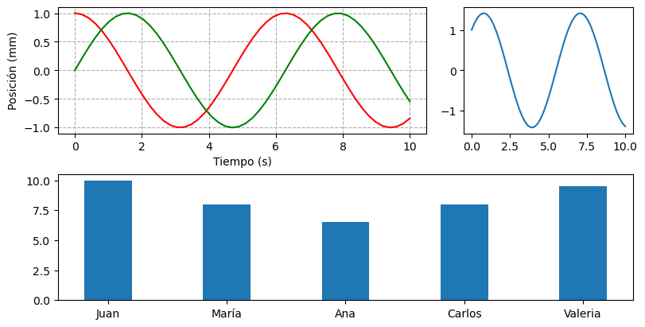
Tal como puedes observar, la clase GridSpec recibe dos argumentos posicionales que corresponden a la cantidad de filas y columnas (2 y 3), respectivamente, que tendrá la rejilla, además recibe también el keyword argument figure para indicar a que Figure se aplicará dicha especificación. Para indicar las posiciones en la cuadrícula que ocupará cada subplot utilizamos la sintaxis:
plt.subplot(gs[idx_row, idx_col])
Siendo idx_row e idx_col los índices de la posición en la fila y columna que se ubicará este subplot. Para subplots que ocuparán más de un lugar se puede utilizar la siguiente sintaxis:
plt.subplot(gs[idx_row_start:idx_row_end, idx_col_start:idx_col_end])
Donde idx_row_start:idx_row_end e idx_col_start:idx_col_end definen un conjunto de posiciones en la cuadrícula que ocupará dicho subplot, de manera similar a cómo se toman las posiciones de un arreglo matricial. Por ejemplo, observa que el primer axes lo definimos con plt.subplot(gs[0,0:2]), lo cual indica que abarcará la fila con índice 0 y las columnas 0 y 1. Para el segundo axes lo especificamos con plt.subplot(gs[0,2]) y abarca un lugar de la cuadrícula: primera fila (índice 0) y tercera columna (índice 2). Para el último axes que creamos con plt.subplot(gs[1,:]), el 1 indica que se ubicará en la segunda fila y los dos puntos : implica que abarcará todas las columnas disponibles de nuestra cuadrícula.
9.12. Gráficas de curvas paramétricas en el espacio#
Una función vectorial de la forma:
Se dice que es una función parámetrica, siendo \(t\) en este caso el parámetro correspondiente. Una función vectorial de este tipo tiene una curva en el espacio asociada como representación gráfica. Es muy común trabajar con este tipo de expresiones en el análisis cinemático de partículas.
Supongamos que queremos graficar la función vectorial:
En el intervalo \( 0 \leq t \leq 4\pi \). Para ello en Python haríamos lo siguiente:
from mpl_toolkits.mplot3d import Axes3D
fig = plt.figure()
ax = fig.add_subplot(111, projection="3d")
t = np.linspace(0, 4*np.pi, 100)
x = np.cos(t)
y = np.sin(t)
z = t
ax.plot(x, y, z)
[<mpl_toolkits.mplot3d.art3d.Line3D at 0x1e9b2417830>]
Ahora explicamos lo referente al código anterior. Observe que en la primera línea importamos la clase Axes3D del módulo mpl_toolkits.maplot3d, esto nos sirve para poder trabajar con gráficas tridimensionales. Luego, definimos un objeto de la
clase Figure y lo asignamos a la variable fig, al objeto fig le añadimos un
Axes mediante el método add_subplot, indicando que en dicho axes se utilizarán las
proyecciones espaciales mediante el keyword argument projection. Las siguientes cuatro líneas
definen las ecuaciones parámetricas. Y finalmente, con el método plot del objeto ax trazamos la
gráfica de la curva tridimensional, note que en este caso el método plot, recibe al menos tres argumentos:
las coordenadas en x, y, z.
Al igual que en las otros tipos de gráficos, podemos también manipular las características. Vea por ejemplo el siguiente código:
fig = plt.figure()
ax = fig.add_subplot(111, projection="3d")
t = np.linspace(0, 4*np.pi, 100)
x = np.cos(t)
y = np.sin(t)
z = t
ax.plot(x, y, z, color="r", linewidth=3)
xticks = ax.get_xticks()
yticks = ax.get_yticks()
ax.set_xticks(xticks[::3])
ax.set_yticks(yticks[::3])
ax.set_xlabel("X")
ax.set_ylabel("Y")
ax.set_zlabel("Z")
Text(0.5, 0, 'Z')
9.13. Gráficas de superficies#
Las gráficas de superficies se utilizan para representar de manera gráfica una función bivariable en el espacio. El procedimiento de graficado para una función de dos variables \( z = f(x,y) \), implica que se tendría que evaluar dicha función en una región delimitada por ciertos valores para las dos variables independientes. Para poder realizar esto de forma muy conveniente, la librería NumPy proporciona una función llamada meshgrid, la cual puede crear una rejilla bidimensional a partir de una lista de valores para cada variable independiente, por ejemplo:
x = [0,1]
y = [10,20]
X,Y = np.meshgrid(x,y)
print(X,Y, sep="\n\n")
[[0 1]
[0 1]]
[[10 10]
[20 20]]
Las variables X y Y contienen arreglos bidimensionales que definen las coordenadas correspondientes de cada punto en la región a evaluar. Cada par ordenado \((x,y)\) se forma a partir de las posiciones correspondientes en las matrices X y Y. Se puede visualizar de forma muy sencilla los puntos en los cuales se evaluará la función \( f(x,y) \) utilizando la función plot:
plt.plot(X, Y, "o")
[<matplotlib.lines.Line2D at 0x27501edd5e0>,
<matplotlib.lines.Line2D at 0x27504cd99d0>]
Observe que los puntos a evaluar en este caso serán \((0,10), (0,20), (1,10), (1,20)\). La densidad de la rejilla (o el número de puntos a evaluar) depende de la cantidad de valores que contengan los vectores que se le pasen como argumentos a la función meshgrid, por ejemplo:
x = [0,0.5,1]
y = [10,15,20]
X,Y = np.meshgrid(x,y)
plt.plot(X, Y, "o");
En general, si se requiere evaluar la funcion \( z = f(x,y) \) en la región \( R = \{(x,y)\,|\,a \leq x \leq b, c \leq y \leq d \} \), entonces se tendrá:
x = np.linspace(a,b,n)
y = np.linspace(c,d,n)
X,Y = np.meshgrid(x,y)
Donde n es un argumento que sirve para especificar el número de valores generados con linspace y en consecuencia servirá para controlar la densidad de la rejilla. Ahora, esas variables X y Y se pueden utilizar para formar expresiones matemáticas que correspondan a la función \( z = f(x,y) \).
Enseguida se muestra el código para graficar la superficie de la función \( z = x^2 + y^2 \), evaluada en la región \(R = \{(x,y)\,|\, -5 \leq x \leq 5, -5 \leq y \leq 5 \}\).
from mpl_toolkits.mplot3d import Axes3D
fig = plt.figure()
ax = fig.add_subplot(111, projection="3d")
x = np.linspace(-5,5)
y = np.linspace(-5,5)
X,Y = np.meshgrid(x,y)
Z = X**2 + Y**2
ax.plot_surface(X, Y, Z, cmap="viridis");
Desmenuzando un poco el código anterior, las primeras tres líneas, como se había descrito con anterioridad, sirven para poder crear un Axes que nos permita trabajar con gráficas tridimensionales. Con la función linspace se crean los intervalos de evaluación para cada variable independiente, luego, meshgrid permite formar la rejilla o puntos sobre los cuales se evaluará la función \( z = f(x,y) \). La expresión Z = X**2 + Y**2 es propiamente la evaluación de la función de dos variables. La función plot_surface recibe como argumentos las tres matrices X,Y,Z que corresponden a las variables independientes y función, respectivamente. El argumento cmap se utiliza para indicar el mapa de color que se utilizará.
Enseguida se muestra otro ejemplo, en este caso se grafica la función \( z = \cos(x) + \text{sen}(y) \), evaluada en la región \(R = \{(x,y)\,|\, 0 \leq x \leq 3\pi, 0 \leq y \leq 3\pi \}\).
from mpl_toolkits.mplot3d import Axes3D
fig = plt.figure()
ax = fig.add_subplot(111, projection="3d")
x = np.linspace(0, 3*np.pi)
y = np.linspace(0, 3*np.pi)
X,Y = np.meshgrid(x,y)
Z = np.cos(X) + np.sin(Y)
ax.plot_surface(X, Y, Z, cmap="inferno");
9.14. Gráficas de curvas de nivel#
Una manera de visualizar una función de dos variables es usar un campo escalar, en el que el escalar \(z=f(x,y)\) se asigna al punto \((x,y)\). Un campo escalar puede caracterizarse por sus curvas de nivel (o líneas de contorno) a lo largo de las cuales el valor de \(f(x,y)\) es constante.
En Matplotlib, el trazo de curvas de nivel se puede hacer utilizando la función contour. Para ejemplificar vamos a trazar las curvas de nivel de la función:
x = np.linspace(-5, 5, 100)
y = np.linspace(-5, 5, 100)
X,Y = np.meshgrid(x,y)
Z = -3*Y / (X**2 + Y**2 + 1)
plt.contour(X,Y,Z)
<matplotlib.contour.QuadContourSet at 0x26104f637a0>
Podemos agregar un argumento adicional a la función contour para especificar la cantidad de niveles o planos de valores constantes que queremos representar:
x = np.linspace(-5, 5, 100)
y = np.linspace(-5, 5, 100)
X,Y = np.meshgrid(x,y)
Z = -3*Y / (X**2 + Y**2 + 1)
cs = plt.contour(X,Y,Z, 10)
En este caso dado que el argumento es una constante, Matplotlib determina automáticamente los planos de valores constantes \(f(x,y)=C\) en los cuales evaluar. Los valores de \(C\) en los cuales Matplotlib evalúa se pueden determinar con el atributo levels:
cs.levels
array([-1.5, -1.2, -0.9, -0.6, -0.3, 0. , 0.3, 0.6, 0.9, 1.2, 1.5])
Sin embargo, también es posible especificar los valores de \(C\) en los cuales queremos evaluar, para esto en lugar de un entero le pasamos un arreglo con dichos valores, por ejemplo:
x = np.linspace(-5, 5, 100)
y = np.linspace(-5, 5, 100)
X,Y = np.meshgrid(x,y)
Z = -3*Y / (X**2 + Y**2 + 1)
niveles = [0, 0.1, 0.2, 0.4, 0.6, 0.8, 1.0]
cs = plt.contour(X,Y,Z, niveles)
Se pueden agregar etiquetas a cada curva de nivel si utilizamos la función clabel, por ejemplo:
x = np.linspace(-5, 5, 100)
y = np.linspace(-5, 5, 100)
X,Y = np.meshgrid(x,y)
Z = -3*Y / (X**2 + Y**2 + 1)
niveles = [-0.5, -0.25, 0, 0.1, 0.2, 0.4, 0.6, 0.8, 1.0]
cs = plt.contour(X,Y,Z, niveles)
plt.clabel(cs)
<a list of 9 text.Text objects>
Además de contour, podemos también hacer uso de countourf, la cual nos ayuda a trazar curvas de nivel pero con la diferencia de que los niveles están rellenos con los colores correspondientes al mapa de color utilizado:
x = np.linspace(-5, 5, 100)
y = np.linspace(-5, 5, 100)
X,Y = np.meshgrid(x,y)
Z = -3*Y / (X**2 + Y**2 + 1)
cs = plt.contourf(X,Y,Z)
Tanto para contour como contourf es posible especificar el mapa de color a utilizar:
x = np.linspace(-5, 5, 100)
y = np.linspace(-5, 5, 100)
X,Y = np.meshgrid(x,y)
Z = -3*Y / (X**2 + Y**2 + 1)
cs = plt.contour(X,Y,Z,cmap="jet")
x = np.linspace(-5, 5, 100)
y = np.linspace(-5, 5, 100)
X,Y = np.meshgrid(x,y)
Z = -3*Y / (X**2 + Y**2 + 1)
cs = plt.contourf(X,Y,Z,cmap="Blues")
plt.title(r"Curvas de nivel para $ f(x,y) = \frac{-3y}{x^2 + y^2 + 1} $ ");
9.15. Campos vectoriales#
En matemática y física, un campo vectorial representa la distribución espacial de una magnitud vectorial [3]. Sea \(D\) un conjunto en \(\mathbb{R}^2\) (una región plana), un campo vectorial en \(\mathbb{R}^2\) es una función \(\mathbf{F}\) que asigna a cada punto \((x,y)\) en \(D\) un vector bidimensional \(\mathbf{F}(x,y)\). [4]
En Matplotlib podemos graficar un campo vectorial en el plano utilizando la función quiver. Para ejemplificar vamos a trabajar con el campo vectorial dado por:
Comenzamos definiendo la región en la cual trazaremos los vectores para este campo, para este ejemplo consideraremos que \(D = \{(x,y)\,|\, -5 \leq x \leq 5, -5\leq y \leq 5 \}\). Esta región la definimos utilizando meshgrid:
x = np.linspace(-5,5,10)
y = np.linspace(-5,5,10)
X,Y = np.meshgrid(x,y)
Ahora definimos las componentes del campo vectorial:
U = -Y
V = X
Y finalmente utilizamos quiver para graficar el campo vectorial:
plt.quiver(X,Y,U,V)
<matplotlib.quiver.Quiver at 0x207bcc2e030>
Se puede establecer un color específico para los vectores mediante el keyword argument color:
plt.quiver(X,Y,U,V,color="orange")
<matplotlib.quiver.Quiver at 0x207bcc2e150>
También es posible establecer un mapa de color para el campo vectorial mediante un quinto argumento posicional C:
C = np.sqrt(X**2 + Y**2)
plt.quiver(X,Y,U,V,C)
<matplotlib.quiver.Quiver at 0x207bce8fe30>
Observa que en este caso el color de cada vector depende de su magnitud.
Veamos ahora otro ejemplo. El campo de velocidades en una placa plana que rota alrededor de un eje fijo está dado por:
Donde \(r\) es la distancia desde el centro de rotación hasta cada punto de la placa, \(\theta\) es la posición angular de cada punto y \(\omega\) es la velocidad angular de la placa, la cual consideraremos que es constante. Los valores de \(r\) y \(\theta\) podemos determinarlos como sigue:
Con esto podemos entonces trazar nuestro campo vectorial en la región \(D = \{(x,y)\,|\, 0 \leq x \leq 10, 0 \leq y \leq 10 \}\).
x = y = np.linspace(0,10,10)
X, Y = np.meshgrid(x,y)
r = np.sqrt(X**2 + Y**2)
w = 5
theta = np.arctan2(Y,X)
U = -w*r*np.sin(theta)
V = w*r*np.cos(theta)
plt.quiver(X,Y,U,V,r,cmap="inferno")
<matplotlib.quiver.Quiver at 0x207bcd63800>
Observa que entre más alejado está un punto del centro de rotación (origen de coordenadas), más grande es la magnitud de su velocidad.
9.16. Animaciones#
9.17. Ejercicios#
Gráfique la función \( y = 10 \cos x \) en el intervalo \( 0 \leq x \leq 2\pi\)
Gráfique la función \( z = t^2 + \frac{1}{3}t \) en el intervalo \( -10 \leq t \leq 20\). Etiquete el eje horizontal como
Tiempoy el eje vertical comoAceleración.
Gráfique la curva parámetrica:
Para \( 0 \leq t \leq 2\pi \)
En este enlace puedes encontrar información acerca del PIB total y per cápita de los estados que conforman a los Estados Unidos de América; con esta información, traza una gráfica de barras que muestre los primeros diez estados y su PIB total y per cápita de manera agrupada.
Una empresa tiene tres sucursales y vende productos en tres categorías: Electrónica, Ropa y Alimentos. Queremos visualizar las ventas de cada categoría en ambas sucursales mediante una gráfica de barras apiladas. A continuación, se muestran los datos de ventas en miles de unidades en un periodo determinado:
Categoría |
Sucursal 1 |
Sucursal 2 |
Sucursal 3 |
Sucursal 4 |
|---|---|---|---|---|
Electrónica |
50 |
40 |
45 |
60 |
Ropa |
30 |
35 |
40 |
38 |
Alimentos |
40 |
45 |
42 |
50 |
Realiza lo siguiente:
Crea una gráfica de barras apiladas usando Matplotlib.
Usa diferentes colores para cada categoría.
Añade etiquetas a los ejes y un título descriptivo.
Muestra una leyenda que indique qué color representa cada categoría.
Opcional: Agrega valores encima de cada barra apilada para indicar el total de ventas por sucursal.
Traza las curvas de nivel para la siguiente función:
En la región \(R = \{(x,y)\,|\, -10 \leq x \leq 10, -10 \leq y \leq 10 \}\). Utiliza 20 niveles.
El índice de masa corporal de una persona se calcula con:
donde \(m\) es la masa de la persona en kilogramos y \(h\) la altura en metros. Traza las curvas de nivel \(B(m,h)=18.5\), \(B(m,h)=25\), \(B(m,h)=30\), \(B(m,h)=35\) y \(B(m,h)=40\). [4]